class: center, middle # Working with Reasoning Models ## How and when to use LLMs for thinking and reasoning ### Instructor: Lucas B. Nicolosi Soares --- # Course Overview 1. Introduction to Reasoning Models 2. How Reasoning Models Work 3. Why Use Reasoning Models 4. Selection Criteria 5. Implementation Strategies 6. Prompting Techniques 7. Understanding Limitations 8. Building Real Applications 9. Case Studies & Best Practices 10. Future Directions --- class: center, middle # Section 1: Introduction to Reasoning Models --- # What are Reasoning Models? .left-column[ ## Key Concepts - System 1 vs System 2 - Chain of Thought - Multi-step Analysis ] .right-column[ 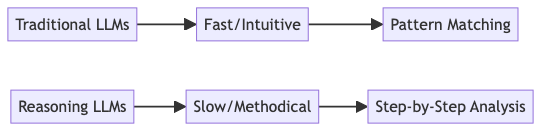 ] ??? Speaker notes: - Traditional LLMs focus on pattern matching and quick responses - Reasoning LLMs take a more methodical approach - Trade-off between speed and accuracy --- # Evolution of LLM Reasoning 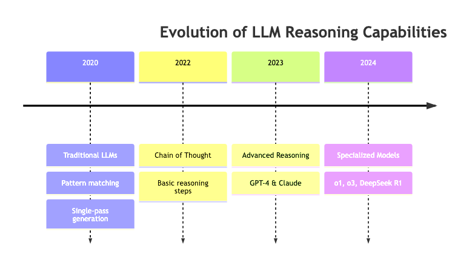 ??? Key developments: - 2020: Basic pattern matching - 2022: Introduction of Chain of Thought - 2023: Major breakthroughs with GPT-4 - 2024: Specialized reasoning models emerge --- # Current Leaders in Reasoning 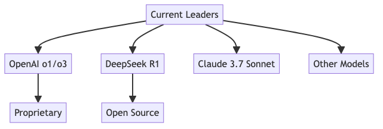 .footnote[*As of Spring 2025] --- class: center, middle # Section 2: How Reasoning Models Work --- # Technical Foundations .left-column[ ## Key Differences - Multi-pass processing - Self-verification - Explicit reasoning steps ] .right-column[ 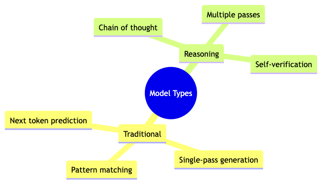 ] --- # DeepSeek R1 Training Process 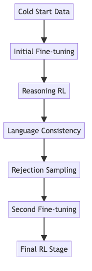 ??? - Complex training pipeline - Multiple stages of refinement - Focus on reasoning quality --- class: center, middle # Section 3: Why Use Reasoning Models? --- # Business Value Proposition 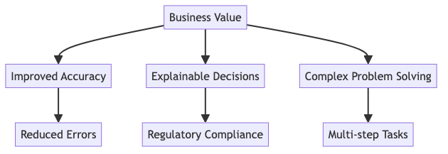 --- # Application Domains 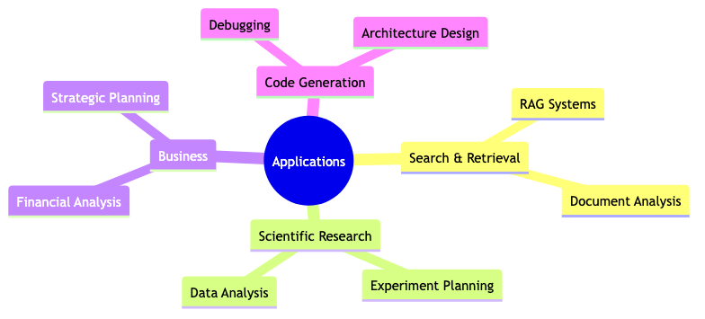 --- # Cost Considerations 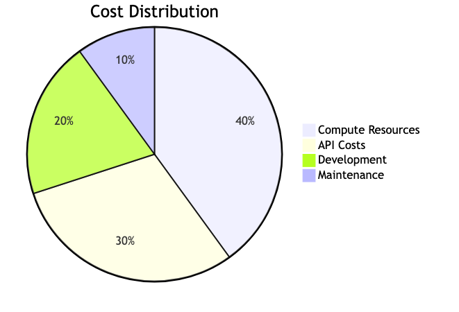 ??? - Compute costs dominate - Consider TCO when choosing models - Balance between capability and cost --- class: center, middle # Section 4: Selection Criteria --- # Key Selection Factors 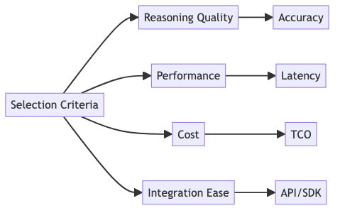 --- # Integration Options 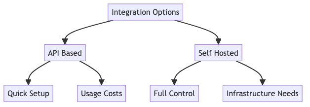 ??? - Consider deployment requirements - Balance control vs convenience - Factor in team expertise --- class: center, middle # Section 5: Implementation Strategies --- # Model Distillation Process 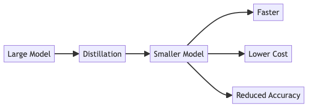 --- # DeepSeek R1 vs. OpenAI o1 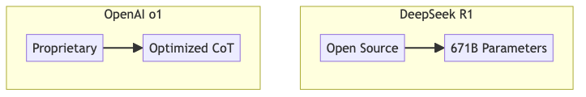 .footnote[*Comparison as of 2025] --- class: center, middle # Section 6: Prompting Techniques --- # Prompt Structure Fundamentals 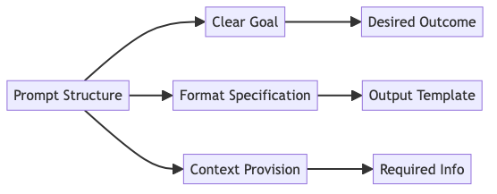 --- # Model-Specific Prompting 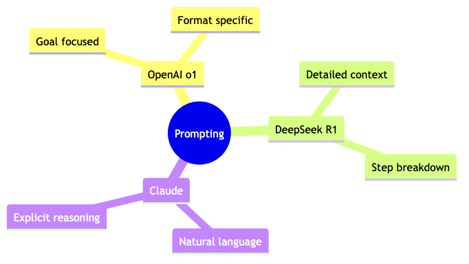 ??? - Each model has optimal prompting patterns - Adapt style to model architecture - Consider model training approach --- class: center, middle # Section 7: Understanding Limitations --- # Fundamental Limitations 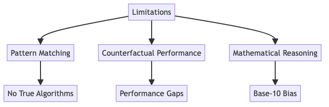 --- # Working with Limitations 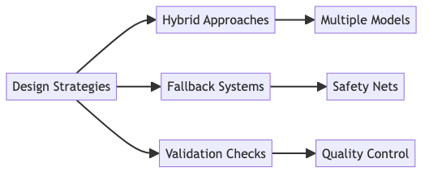 --- class: center, middle # Section 8: Building Real-World Applications --- # Development Framework 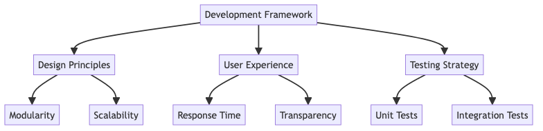 --- # Integration Patterns <img src="../notebooks/assets-resources/mermaid_graph18-1.png" width="100%"> --- # Quality Monitoring 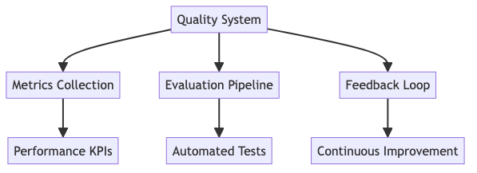 --- class: center, middle # Section 9: Case Studies and Best Practices --- # Educational Assistant Example 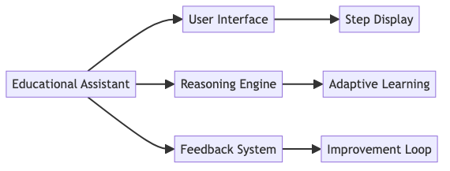 --- # Developer Tools Integration 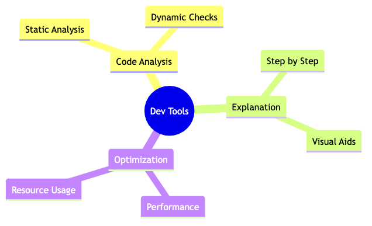 --- class: center, middle # Section 10: Future Directions --- # Development Roadmap 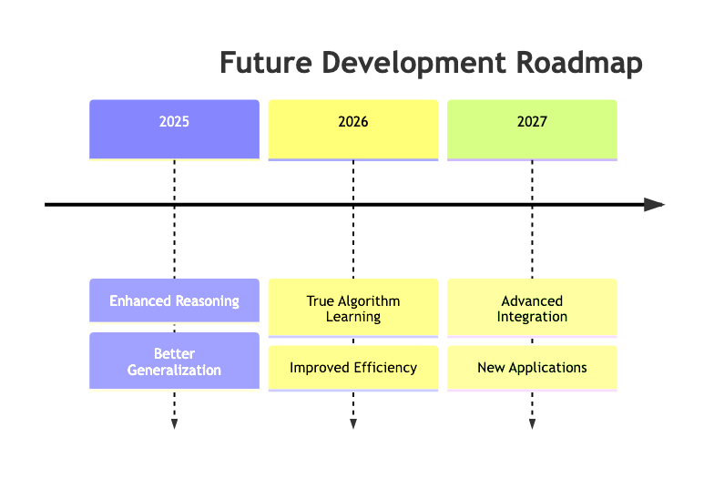 --- # Implementation Planning 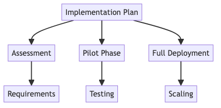 --- # Learning Resources 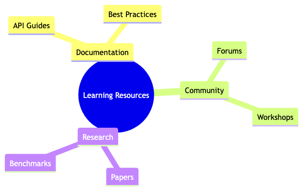 --- class: center, middle # Thank You! ## Questions & Discussion ??? Final speaker notes: - Encourage audience participation - Reference additional resources - Share contact information - Highlight key takeaways